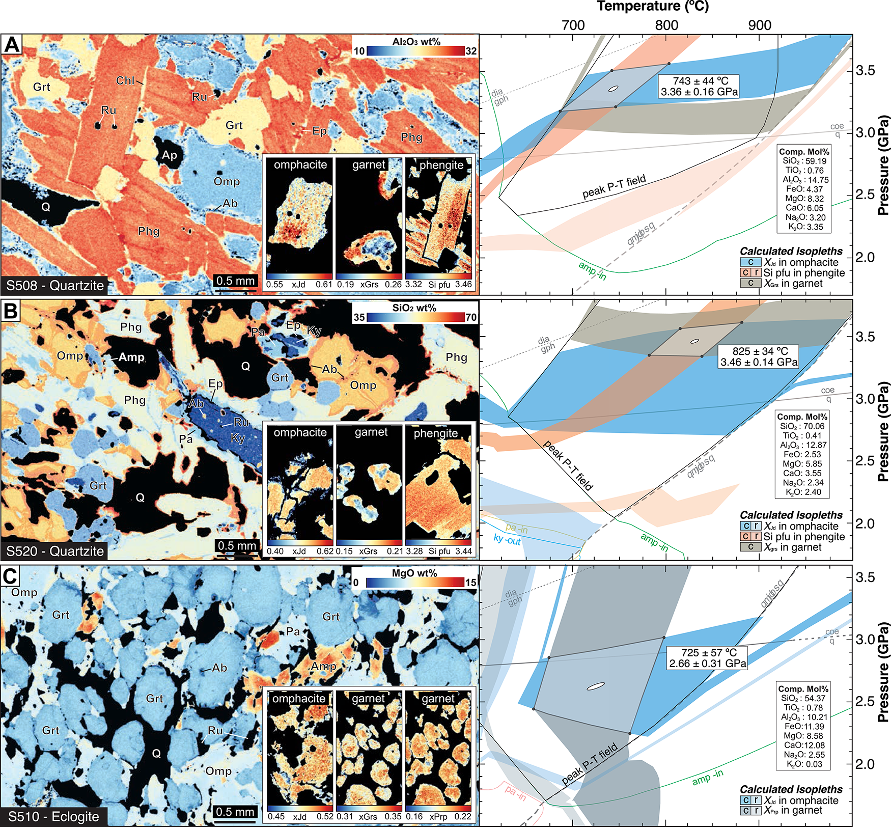

Fast exhumation of Earth’s earliest ultrahigh-pressure rocks in the West Gondwana orogen, Mali

Resumo em Português
A exumação de rochas de ultra-alta pressão (UAP) ocorreu a taxas comparáveis no Neoproterozoico e nos orógenos colisionais modernos? Abordamos essa questão por meio de um estudo geocronológico multiminerálico de rochas UAP do cinturão de dobras e cavalgamentos de Gourma, no Mali. A petrologia integrada e a geocronologia U-Pb em zircão revelam condições metamórficas de pico de 820–740 °C e 3,3–3,4 GPa em 611,7 ± 3,6 Ma, fornecendo evidências da subducção da margem passiva do Cráton Oeste-Africano a ~125 km de profundidade no orógeno do Gondwana Ocidental.Idades de resfriamento U-Pb em rutilo indicam a exumação posterior da unidade UAP de Gourma a níveis crustais médios (~35 km) em 601,7 ± 3,2 Ma. Essas duas idades fornecem um intervalo de tempo entre as condições de pico e a exumação a 35 km de 10 ± 3,1 Ma, delimitando uma taxa média de exumação vertical de 0,9 ± 0,3 cm/ano. Os dados indicam uma taxa de exumação rápida para as rochas UAP mais antigas conhecidas, comparável à reportada para orógenos colisionais modernos. Argumenta-se que a exumação das rochas UAP profundamente subductadas ao longo do orógeno do Gondwana Ocidental contribuiu para mudanças significativas na atmosfera e biosfera neoproterozoicas.